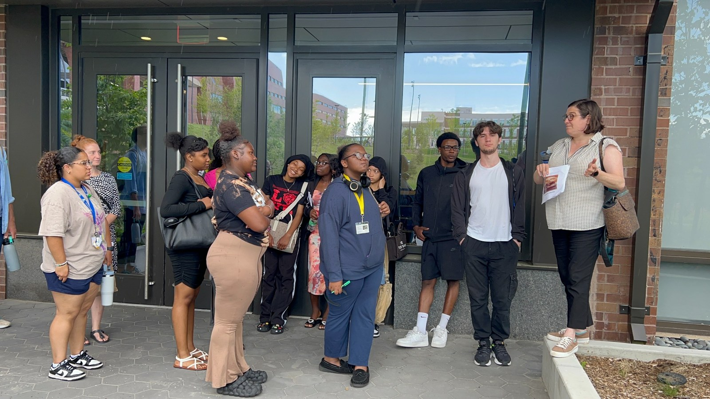

Planning pathways
High School Urban Planning Pathways
A public-facing educational initiative connecting youth of color with urban planning, community development, public service, applied research, and local government practice.

Overview
This program introduces high school students to planning through place-based learning, internships, community research, and applied engagement with urban issues such as heat, transportation, housing, public space, and environmental justice.
It is part of a broader commitment to building more equitable pathways into the planning profession.
Visit the UMass Boston High School Urban Planning Program website
Related studio work
The 2023-2024 UPCD Planning Studio evaluated and developed implementation models for the Boston Pipeline Initiative.